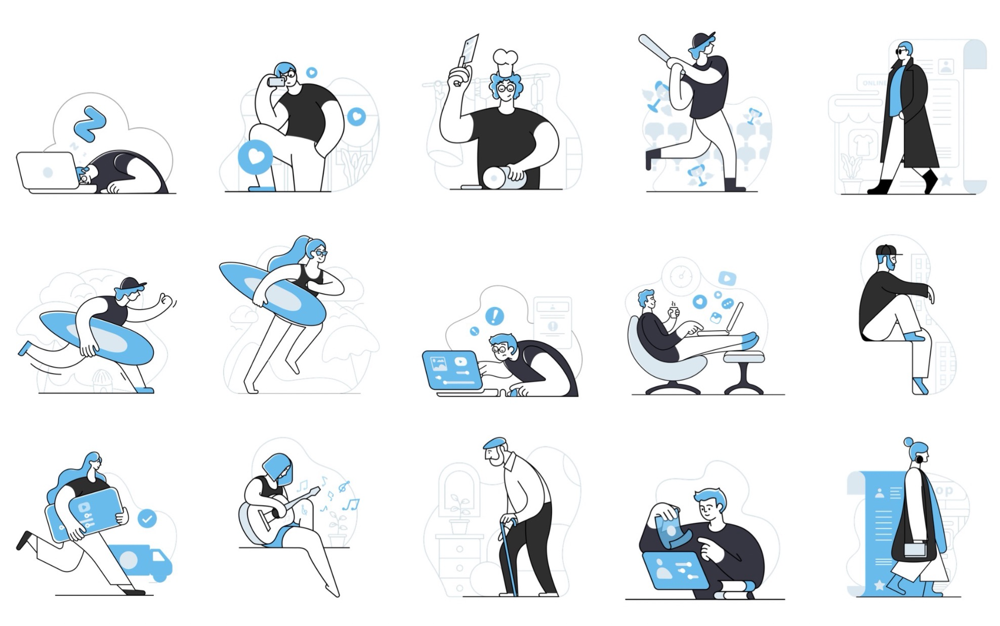
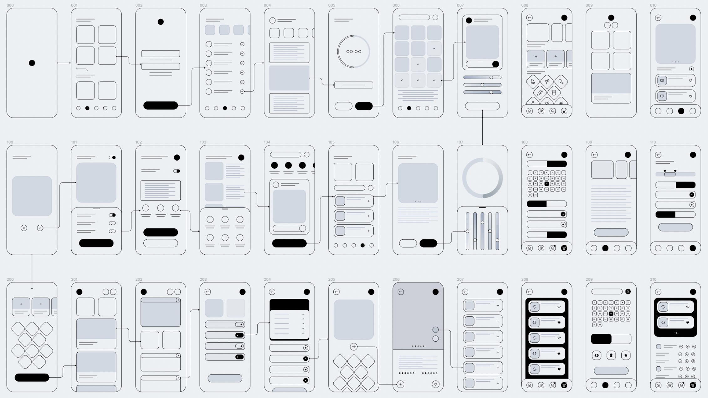
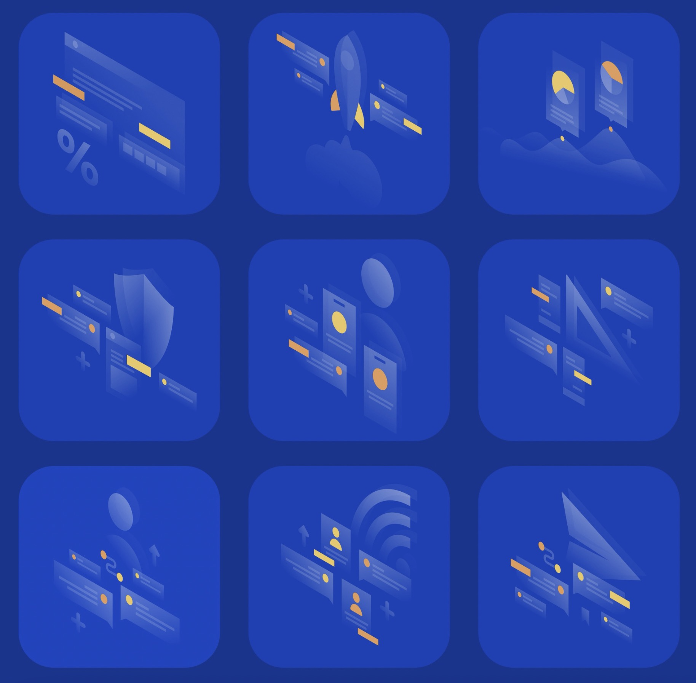
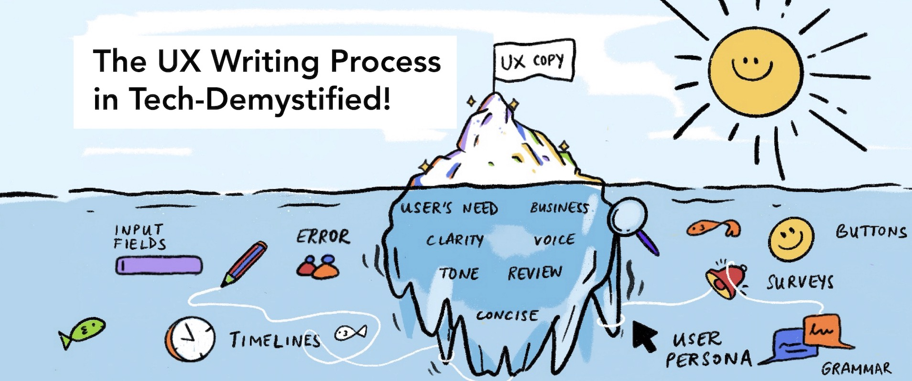
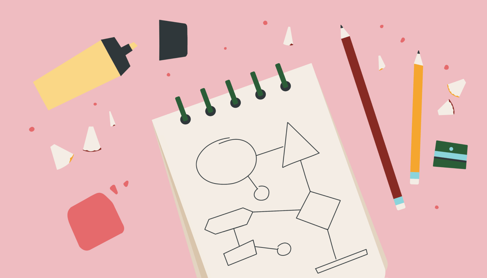
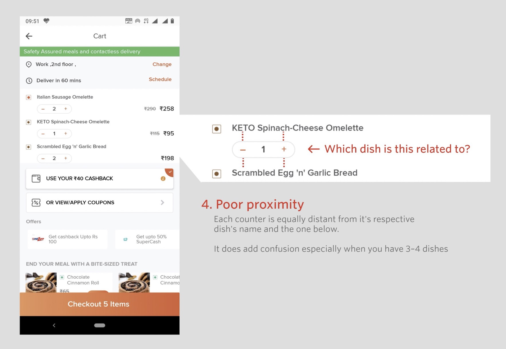
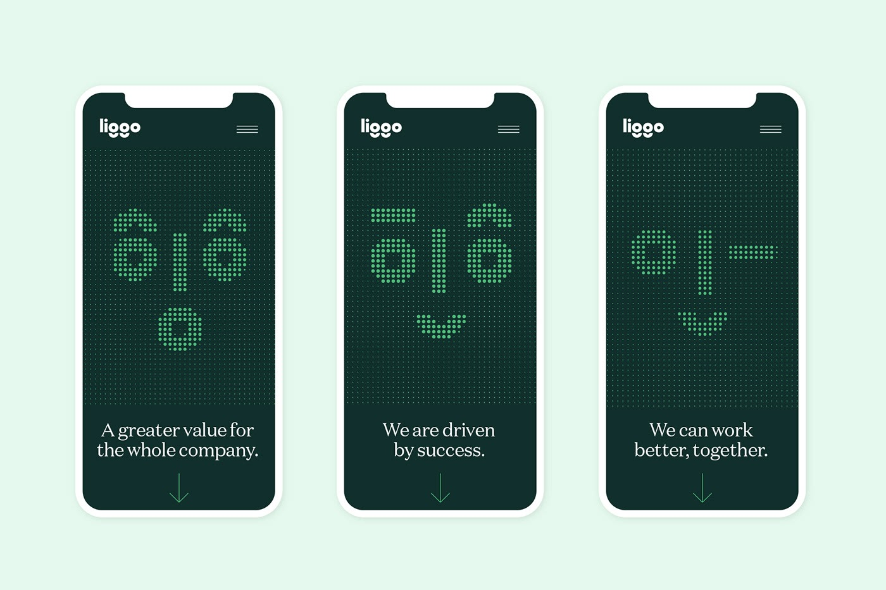
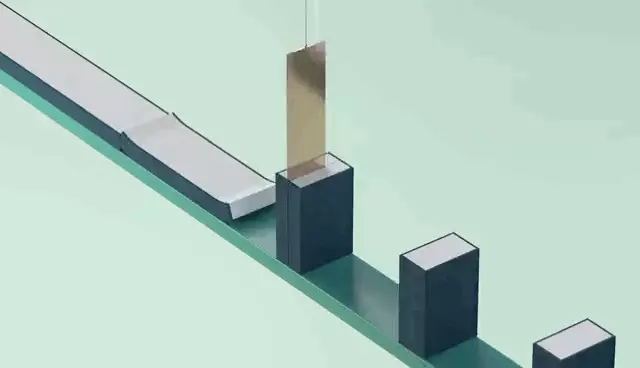

设计周刊 Design Weekly #51
📕 设计资源
Blues illustrations
https://www.getillustrations.com
60 款涵盖各种主题的双色调插画，包含多种文件格式，方便灵活的应用到网站、App 或印刷作品中。（你也可以在公众号内回复“Blue”获得该资源）

Wireframes for mobile UI design
https://www.figma.com/community/file/848318135747364351
Figma 社区中的移动 UI 线框图，包含多个应用场景。

半透明插画
所有的插图都是以半透明的等距风格制作的，你可以根据自己的需要改变背景颜色。文件包含多种常见格式（你也可以在公众号内回复“lucid”获得该资源）

📗 设计文章
The UX Writing Process in Tech — Demystified
https://design.zeta.in/the-ux-writing-process-in-tech-demystified-3fe2481b599a
ZetaDesign（为印度金融行业解决方案设计团体 ） 的 UX 设计师斯内·辛格（Sneh Singh） 关于 UX 文档的一些写作技巧。正文中出现的插画很有意思（作者不亏是兼职画家的，简单明了的画风很适合做文中的配图，厉害~）

Pillars of Digital Product Design
https://slack.design/articles/pillars-of-digital-product-design
Slack 出品：数字产品的设计支柱，现在数字产品随处可见，虽然产品设计不像设计火箭那般复杂，但也不是一项简单的任务，同样需要注意细节、用户和业务需求、可访问性等。

How we Build a Design System
https://medium.com/indeed-design/building-an-accessibility-library-e134e9012c17
第一个设计系统是由 NASA 在 1976 年推出的，现在几乎所有的大厂都在有这样的系统，给团队和产品带来了一致性。
文中展示了Jonathan Saring 创建设计系统的整个过程，希望可以给大家带来一个很好的思路。

📘 设计案例
Case study: FreshMenu 购物车的重设计
Redesign 让我知道不是每个类似的公司都是一样的。作者 Haresh Punjabi 从自己对页面体验的思考入手，对 FreshMenu（一家互联网首创的云厨房）应用中购物车的重新设计。

Liggo的品牌设计和 VI
https://abduzeedo.com/liggo-branding-and-visual-identity
byHAUS studio为 Liggo 设计的品牌和 VI。Liggo 是一个生产管理平台没中小制造上提供供应链。没有难懂的术语、不透明的流程、不兑现的承诺。为 Liggo 塑造了人与机器之间协作的品牌形象。

📙 设计灵感
名画中的小可爱！
http://www.fubiz.net/2021/03/11/baby-face-in-famous-paintings-2/
巴西的视觉艺术家 Lucas de Ouro 为女儿拍的出生照将名画再现：蒙娜丽莎、戴珍珠的女孩、弗洛里达自画像，看着当时只有 18 个月大的可爱小朋友是不是都忘记原著的模样了？
催眠解压动画
https://www.topys.cn/article/31476
瑞典斯德哥尔摩的艺术家兼导演Andreas Wannerstedt创作的极度舒适的解压动画。个人网站中可以看到配乐版本的，有睡眠问题的小伙伴，可以睡前试一下，非常好睡~

